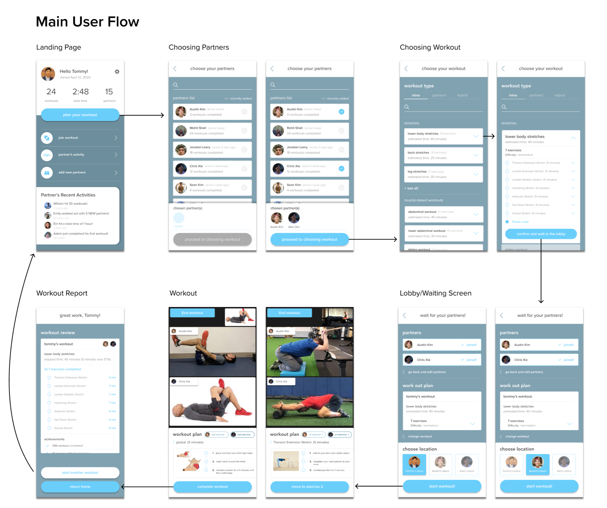

Ballot Box


This research was intended to better understand college students, their experience voting in political elections, and delved deeply into defining what, if at all, makes the experience of voting difficult. The project worked to understand what factors are at play when one decides to vote, and how their surroundings impact their ability, or lack thereof, to vote. By studying and working with students from across Cornell’s campus, we aimed to have further clarity into one’s voting process today, which guided our understanding of any friction in the process. Additionally, our research helped us better understand if we can better streamline one’s decision to vote, or if there is a way to provide better, more relevant resources to ease the decision to vote or not vote. Lastly, we hope to empower people to make the right decision for their personal situation when it comes to voting.
WeFit
- 
-

Through this project, our group’s main goal was to examine the effect phone usage had on our participants’ mental and physical well being, specifically during the self quarantine period caused by COVID-19. Furthermore, in this study, we surveyed 9 undergraduate college students, daily, where we asked a range of questions to gage their mental well being and physical state, as well as the amount of and contextual usage of their cellular devices. The result of this study demonstrated that the time spent on a cell phone was rarely an indicator for mental or physical well being. Rather, the context behind what people are doing on their phone had a larger hand in shaping the individuals physical and mental state. Moreover, our primary finding was that under self-isolation, college students were experiencing insufficient levels of physical activity which in turn affected other facets of their life. Furtermore in our paper we have provided one possible solution in response to the struggles of undergraduate college students under the context of self-isolation. Through our study, we have found that students largely struggled with phone use distraction, sleep quality, anxiety, feelings of connectedness with friends and family, and physical inactivity. To ameliorate these issues our group created WeFit, an interactive, social, fitness application, whose main goal is to increase physical activity and social awareness. To conclude, this study has provided the HCI community with profound findings. First, college students' phone usage is more complex than the literature suggests. The many studies that have been done regarding students and phone use are outdated, and more research needs to be done to fully understand the intricacies, and influences our phone use has on us. Second, we have conducted our study during a unique period of time, self-isolation. The Coronavirus altered the lives of many individuals across the country, yet through this study, we were able to get a glimpse of how people behave under these circumstances. Lastly, we have contributed a new topic of interest in HCI. How can technology provide assistance to those who are mandated to stay at home, such as the physically/intellectually disabled, or army brats and their children? Though regardless, it is evident that there are a multitude of ways to improve student physical and mental health and no single solution can fully solve all of these problems.